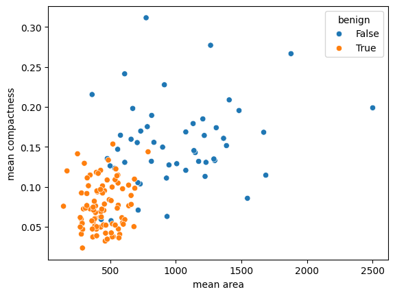

import os
os.chdir('drive/MyDrive/2024-cnu-lecture')6 Machine Learning
6.1 K-Nearest Neighbor (KNN)
- KNN은 지도학습의 한 종류로 거리 기반의 분류모델임
- 비지도학습의 클러스터링과 유사하나 Y값 (class, 반응값)이 있다는 점에서 클러스터링과 차이
- 설명변수 X 값들을 이용해 반응변수 Y (분류)값을 설명하는 모형으로
- 새로운 데이터가 주어질 경우 K개의 인접한 데이터를 찾아서 이에 속한 클래스로 분류 수행
import numpy as np
import pandas as pd
import matplotlib.pyplot as plt
from sklearn.datasets import load_breast_cancer
from sklearn.metrics import confusion_matrix
from sklearn.neighbors import KNeighborsClassifier
from sklearn.model_selection import train_test_split
import seaborn as sns- https://github.com/HongleiXie/MLFromScratch
- 각종 ML 모형 (python, tensorflow 프레임워크)
breast_cancer = load_breast_cancer()dir(breast_cancer)
print(breast_cancer.DESCR)print(breast_cancer.data.shape)
X = pd.DataFrame(breast_cancer.data, columns=breast_cancer.feature_names)
X.head()(569, 30)| mean radius | mean texture | mean perimeter | mean area | mean smoothness | mean compactness | mean concavity | mean concave points | mean symmetry | mean fractal dimension | ... | worst radius | worst texture | worst perimeter | worst area | worst smoothness | worst compactness | worst concavity | worst concave points | worst symmetry | worst fractal dimension | |
|---|---|---|---|---|---|---|---|---|---|---|---|---|---|---|---|---|---|---|---|---|---|
| 0 | 17.99 | 10.38 | 122.80 | 1001.0 | 0.11840 | 0.27760 | 0.3001 | 0.14710 | 0.2419 | 0.07871 | ... | 25.38 | 17.33 | 184.60 | 2019.0 | 0.1622 | 0.6656 | 0.7119 | 0.2654 | 0.4601 | 0.11890 |
| 1 | 20.57 | 17.77 | 132.90 | 1326.0 | 0.08474 | 0.07864 | 0.0869 | 0.07017 | 0.1812 | 0.05667 | ... | 24.99 | 23.41 | 158.80 | 1956.0 | 0.1238 | 0.1866 | 0.2416 | 0.1860 | 0.2750 | 0.08902 |
| 2 | 19.69 | 21.25 | 130.00 | 1203.0 | 0.10960 | 0.15990 | 0.1974 | 0.12790 | 0.2069 | 0.05999 | ... | 23.57 | 25.53 | 152.50 | 1709.0 | 0.1444 | 0.4245 | 0.4504 | 0.2430 | 0.3613 | 0.08758 |
| 3 | 11.42 | 20.38 | 77.58 | 386.1 | 0.14250 | 0.28390 | 0.2414 | 0.10520 | 0.2597 | 0.09744 | ... | 14.91 | 26.50 | 98.87 | 567.7 | 0.2098 | 0.8663 | 0.6869 | 0.2575 | 0.6638 | 0.17300 |
| 4 | 20.29 | 14.34 | 135.10 | 1297.0 | 0.10030 | 0.13280 | 0.1980 | 0.10430 | 0.1809 | 0.05883 | ... | 22.54 | 16.67 | 152.20 | 1575.0 | 0.1374 | 0.2050 | 0.4000 | 0.1625 | 0.2364 | 0.07678 |
5 rows × 30 columns
- dummy y 변수 생성
y = pd.Categorical.from_codes(breast_cancer.target, breast_cancer.target_names)
y = pd.get_dummies(y, drop_first=True)
y| benign | |
|---|---|
| 0 | False |
| 1 | False |
| 2 | False |
| 3 | False |
| 4 | False |
| ... | ... |
| 564 | False |
| 565 | False |
| 566 | False |
| 567 | False |
| 568 | True |
569 rows × 1 columns
- 데이터셋 준비 (훈련/테스트셋)
X_train, X_test, y_train, y_test = train_test_split(X, y)- 모형 훈련 및 그래프
knn = KNeighborsClassifier(n_neighbors=5, metric='euclidean')
knn.fit(X_train, y_train)
y_pred = knn.predict(X_test)
sns.scatterplot(
x='mean area',
y='mean compactness',
hue='benign',
data=X_test.join(y_test, how='outer')
)/home/haseong/anaconda3/envs/biopy/lib/python3.11/site-packages/sklearn/neighbors/_classification.py:238: DataConversionWarning: A column-vector y was passed when a 1d array was expected. Please change the shape of y to (n_samples,), for example using ravel().
return self._fit(X, y)
- 예측 성능
results = pd.DataFrame([y_test["benign"].values, y_pred], index=("test", "predict")).T
print(results) test predict
0 False True
1 True True
2 False False
3 False False
4 True True
.. ... ...
138 False False
139 False False
140 True True
141 True True
142 True True
[143 rows x 2 columns]from sklearn import metrics
print("Accuracy:",metrics.accuracy_score(y_test, y_pred))Accuracy: 0.9370629370629371- 변수 중요도 탐색
from sklearn.inspection import permutation_importance
# Compute permutation feature importance
results = permutation_importance(knn, X_test, y_test, n_repeats=5, random_state=40)
# Get importance scores
feature_importance = results.importances_mean
# Plot feature importance
plt.bar(range(X.shape[1]), feature_importance, tick_label=breast_cancer.feature_names)
plt.xlabel('Features')
plt.ylabel('Importance')
plt.title('Feature Importance Using Permutation on Model')
plt.xticks(rotation=90)
plt.tight_layout()
plt.show()